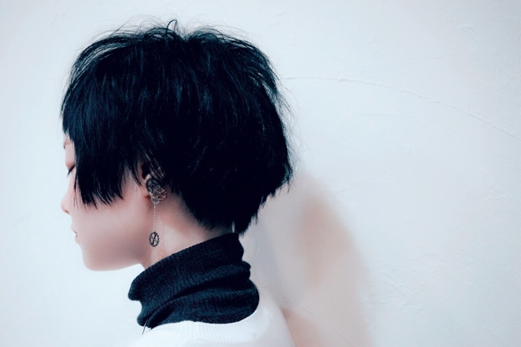

About
柳沼尚枝（Hisae Yaginuma)
- 出身地：福島県
- 職業：夢見がちな女子大生
- 尊敬する人：けんすうさん
- 性格：未来志向
- 趣味：妄想・SNS
- 将来の夢：世界平和
- ポリシー：自分を大事にする
作る人になりたい人の自己紹介ページ。
たまに独り言をブログ に書いたりしています。
自由になりたい。

郡山市で生まれる。肌が白すぎてよく病気を疑われる。
二本松市立原瀬小学校へ入学。小２でバスケを始め、負けず嫌いで気が強かった。シューターとして活躍。ピアノ、ダンス、水泳、そろばんなど習い事をたくさんしていたが、一番は絵を描くことが好きだった。
二本松市立二本松第三中学校へ入学。卓球部に入部。指導者と運命的な出会いをして上達し、県予選大会で優勝する。人生のピーク。休みがちだったが成績優秀だったため放置される。保健室常連。最後の定期テストで学年１位を取る。
福島県立郡山東高等学校へ入学。家庭環境と人間関係の悪化により、高校を中退。いろいろとこじらせたが、気合いで高卒認定を取り大学へ進学することを決意。震災の影響で仙台で1年間一人暮らしをする。コンビニとスーパーでアルバイトをし、学校以外での友人ができる。
なんとか東海大学に合格。色や画像に興味があったため、工学部の光・画像工学科に入学。今までの反動から、大学生らしい学生生活を堪能し青春を謳歌する。サークルと実験とアルバイトに明け暮れる生活。
伝染病に罹り一ヶ月入院し死にかける。新しいことがしてみたくなり、インターンを探しはじめる。けんすうさんに会ってみたくてSupershipに。ゆるく適当で優秀な社会人から刺激と影響を受け、様々なことに挑戦する。プログラミングとデザインを勉強し始める。就職活動をしはじめ、気がつくと友達が半年で100人増えていた。将来について真面目に考えどうしても絵が描きたくなり美大の予備校に通い始める。今ココ。
気がつくといつの間にか本屋にいたりします。何時間でもいれます。
・漫画：絵が好みであれば基本何でも読みます。おすすめ紹介します。
・小説：嫌ミスが好きです。最近読んで好きだったものは呉勝浩さんの「白い衝動」です。
・ビジネス書：人から勧められた本は買うようにしています。最近はグローバルエリートのムーギーさんにサインをいただきました。
大学２年の夏に旅行に行きました。とにかく全てが最高でした。
とにかく最高だったので、イタリア語の授業を受けようと思ったら、隣の子が一言もしゃべってくれなくて諦めました。
・将来住みたい街：トレント
個人の実力が勝利に確実に結びつくところが好きでした。本気でうまくなりたい人がいたら指導しますよ。
・歴10年、最高成績県ベスト16
・やってみたいこと：卓球のメディアを作ること
制作時間：8時間
使った道具：木炭
りんごとアボカドと青りんごの描き分けをしたくてこの構図を取りました。
紙袋の質感をもっと出したかったです。
制作時間：9時間
使った道具：油絵具
モデルさんの髪が長くてきれいだったので、きれいに描くことを意識しました。
服の模様を描くのに苦労しました。
制作時間：5時間
使った道具：色鉛筆
葉っぱや茎の質感がうまく出せたと思います。
制作時間：約0.5時間
使った道具：シャープペンシル,ボールペン
下の二枚は模写です。
制作時間：2時間
使った道具：コピック
陰影をつけるのに苦労しました。
コメント
制作時間：9時間
使った道具：木炭
初めて木炭デッサンしたときのものです。